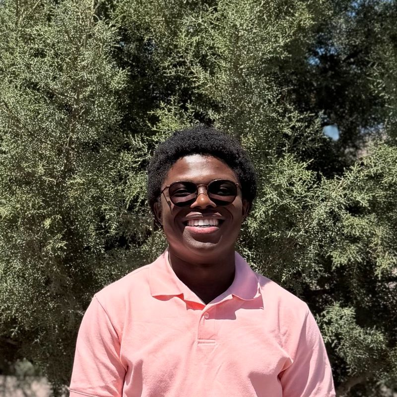

Timothy Junior Amevor
Ph.D. Student, Mechanical Engineering — New Mexico Institute of Mining and Technology
Timothy is a Ph.D. student in Mechanical Engineering at New Mexico Tech working under Dr. Ashok K. Ghosh. His doctoral research is part of the NASA EPSCoR AQUASHIELD project, developing a bio-inspired, multifunctional composite system for space habitat protection. Timothy’s focus is the shear-thickening and self-healing exterior protection layer, addressing micrometeoroid and orbital debris (MMOD) impact resistance and autonomous repair, spanning fluid formulation, nanoparticle-loaded composites, and dynamic mechanical testing from quasi-static to hypervelocity impact regimes. Final validation of his samples will take place at the NASA White Sands Test Facility, using hypervelocity impact testing.
Timothy earned his M.S. in Mechanical Engineering at New Mexico Tech, supported by the NASA NMSGC Research Infrastructure Grant. His thesis developed a D-shaped, bio-inspired heat pipe that separates vapor and condensate flow paths, benchmarking six wick architectures — three reconstructed from natural porous structures and three engineered triply periodic minimal surface (TPMS) lattices — against a conventional mesh wick heat pipe. The strongest engineered lattice transported about 9% more heat than the conventional design at the same length, while the strongest natural structure, derived from volcanic pumice, transported roughly 40% more, the widest margin recorded in the study. The work combined thermal management research (nanofluids, wick characterization, heat pipe performance), micro-CT imaging and reconstruction of natural porous structures into printable wick geometry, additive manufacturing (filament and SLA printing), computational modeling (ANSYS FEA, COMSOL, lattice Boltzmann methods), and experimental techniques including thermocouple instrumentation and custom Arduino-based sensing systems.
In addition to his heat pipe research, Timothy has worked on thermal simulation of a 6U CubeSat under the University Nanosatellite Program (UNP) at New Mexico Tech.